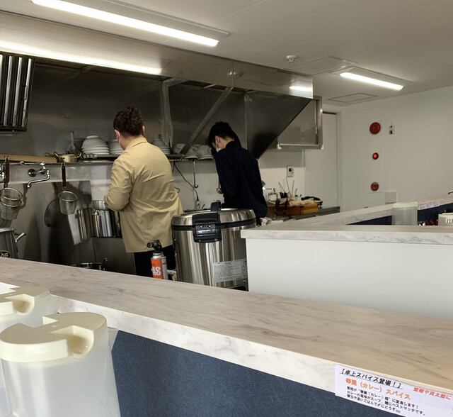

Chapter One其の一첫 번째其一
A character for stock「湯」という一字‘湯’이라는 글자一个「湯」字
Read one way, 湯 (yu) means hot water; to a ramen cook it means the stock — the living heart of the bowl. We built our name around it because, at Santan, the broth is not a base. It is the point. 「湯（ゆ）」は湯気立つお湯であり、ラーメン職人にとっては出汁そのもの——器の命です。三湯では、スープは土台ではなく主役。だからこの一字を店名に据えました。 ‘湯(유)’는 뜨거운 물이자, 라멘 장인에게는 육수 그 자체—그릇의 심장입니다. 三湯에서 국물은 바탕이 아니라 주인공이기에, 이 한 글자를 상호에 담았습니다. 「湯」既是热水，对拉面职人而言更是高汤——一碗的灵魂。在三湯，汤头并非陪衬，而是主角，故以此字立店名。
Everything downstream — the tare, the noodles, the toppings — is chosen to serve it, never to cover it. タレも、麺も、具材も、すべてはスープを引き立てるために選ぶ。決して覆い隠さないために。 타레도, 면도, 고명도—모두 국물을 살리기 위해 고를 뿐, 결코 가리기 위함이 아닙니다. 调味、面条、配料，一切皆为衬托汤头而选，绝不掩盖。